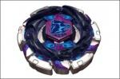

Dark Poseidon 145WD
| Dark Poseidon 145WD | |
|  | |
| Number: | None |
|---|---|
| System: | Hybrid Wheel System |
| Type: | Stamina |
Contents
Note: Dark Poseidon was featured in the Metal Fight Beyblade Movie "VS the Sun: Sol Blaze, the Scorching-Hot Invader", but is in fact a simple Dark Aquario 145WD. It was never released by official Beyblade companies, and only exists physically thanks to the sticker sheet that was given via CoroCoro in a very limited way in Japan.
Face: Poseidon
The Face on this Beyblade depicts Poseidon, the Greek deity of the sea and ocean.
Clear Wheel: Aquario
- Weight: 3.2 grams
Aquario?s original release colour is navy, featuring a wave pattern which repeats itself four times. It is amongst the heaviest Clear Wheels, making it one of the best Clear Wheel choices for HWS based Defense customizations.
Metal Wheel: Dark
- Weight: 31.4 grams
Dark has twelve spikes facing the clockwise direction. These protrusions are closely packed together with minimal space between each, resulting in an overall round shape. This shape hinders the Metal Wheel in two ways: its protrusions are not pronounced enough to provide sufficient Smash Attack, while the perimeter is interrupted too frequently for sufficient Stamina. Additionally, its weight is distributed over too large a surface area. There is thus no reason to use Dark in any competitive situation whatsoever.
Track: 145
| Weight: | 1.47 grams | Full Width: | 20 mm | Minimum Width: | 18 mm | Height: | 14.50 mm |
145, along with its variants (C145, DF145, etc.), was once the highest Track available, until the 230 Track was released with Flame Byxis. It can be used in Stamina customs to great effect due to its tall height, which allows for more wobbling as the Beyblade loses its spin velocity. However, gimmick-paired Tracks like BD145 have immensely outclassed their original bare variant, on top of several taller gimmick Tracks surpassing 145 as well against heavy, mid-height Attackers. Even in Stamina battles, 145 does not offer enough balance: Tracks like AD145 and W145 provide a good center of gravity, and aid with a slight downforce to maintain stability.
Bottom: Wide Defense
| Weight: | 0.7 gram | Full Width: | 15.53 mm | Tip Width: | 14.17 mm | Full Height: | 8.92 mm | Tip Height: | 6.75 mm |
Wide Defense, as its name implies is one of the widest of the ?Defense? series of Bottoms (D, SD, WD, PD, EWD). This brings numerous advantages, but also some disadvantages when compared to the other ?Defense? Bottoms, specifically D. The advantages include its ability for abnormally long precession times due to its massive width that reaches the edge of the Bottom's perimeter. This allows it to wobble at a significantly larger angle for a longer period of time than D, and at a much lower spin rate. However, depending on the position of the Beyblade using WD and the spin rate of the opponent, this can be disadvantageous because of how easy it becomes to knock over the precessing WD custom. This low spin rate towards the end of the battle is created because in the process of wobbling at such a large angle, more friction is made with the stadium floor, thus decreasing its Stamina. Nevertheless, this more often an advantage than it is a disadvantage.
Newer parts such as CS, EDS and B:D have overshadowed WD to some degree: CS and EDS due to their ability to be paired with the popular BD145 Track without scraping, and B:D because of its height and even longer precession times, but WD is still one of the best pure Stamina Bottoms available. However, when selecting high Tracks such as TH170 and 230, WD's tendency to wobble at larger angles should be kept in mind, as its extreme precession can often become problematic.
Although the name suggests Defensive characteristics, WD does not possess any inherent defensive qualities. However, its proficiency can be increased significantly when facing left-spin Attackers through the utilization of the Weak Shooting technique.
Use in Stamina customization
WD is arguably the best of the ?Defense? series of Bottoms, and its effectiveness can be utilized in the custom Phantom Bull AD145WD.
Other Versions
- Dark Aquario 145WD - Poseidon sticker sheet from special Collection Box (Orange)
- Storm Aquario M145Q ? Hybrid Wheel Reshuffle Set (Attack & Balance) (Clear Red)
- Rock Aquario 125SF ? Faceoff: Pegasis Tornado Wing
- Cyber Aquario 105RF - Beyblade Deck Attack & Defense Set (Light Blue)
- Storm Aquario 100HF/S -Beyblade Metal Fusion (Dark blue)
- Dark Aquario 100HF/S -Fusion Wheel Change (Dark blue)
Gallery
-
Official Dark Poseidon sticker sheet
Overall
Dark Aquario 145WD consists of only a half of good parts, Aquario and WD. Therefore, outside of the desire to recreate a Beyblade never released if the special Poseidon sticker sheet is acquired, there is no reason to want to build this Beyblade combination.